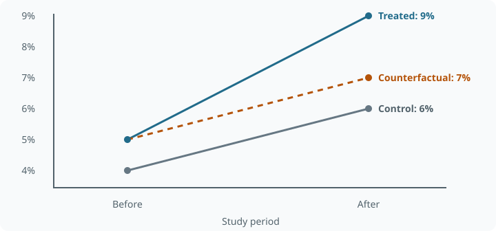

Difference-in-Differences and Event Studies
Learning goals
- Derive the two-group, two-period estimator and interpret every regression coefficient.
- Explain parallel trends, unit and time fixed effects, and event-time normalization.
- Recognize treatment-effect heterogeneity problems in staggered TWFE designs.
Intuition
A city launches a seller incentive and GMV grows. Some growth might have happened anyway during a holiday. DiD subtracts the untreated comparison group’s change from the treated group’s change. Stable baseline differences cancel within groups; a common time change cancels across groups.
The causal argument is parallel untreated trends: without the policy, the treated group’s average change would match the comparison group’s change. This allows different initial levels. It does not allow an unaccounted city-specific demand shock coinciding with launch.
Worked example
Four cells and four coefficients
A hypothetical livestream pop-up yields these ordering rates:
| Group | Before | After | Change |
|---|---|---|---|
| Control | 4% | 6% | +2 pp |
| Treated | 5% | 9% | +4 pp |
\[\widehat\tau_{DiD}=(0.09-0.05)-(0.06-0.04)=0.02.\]
The counterfactual treated post-period rate is \(5\%+2\%=7\%\). The actual 9% is 2 percentage points higher. A raw post comparison gives 3 pp; a treated-only before/after comparison gives 4 pp. Each retains a different unwanted component.

Fit
\[Y_{it}=\alpha+\beta G_i+\gamma P_t+\delta G_iP_t+\epsilon_{it}.\]
Here \(G_i\) marks the treated group, and \(P_t\) marks the post period. The four fitted cells are \(\alpha\), \(\alpha+\gamma\), \(\alpha+\beta\), and \(\alpha+\beta+\gamma+\delta\). Therefore \(\alpha=0.04\), \(\beta=0.01\), \(\gamma=0.02\), and \(\delta=0.02\). The interaction becomes causal only with the design assumptions.
A dynamic rollout
Relative to the last pre-launch period, suppose estimated differences in percentage points are:
| Event time | -3 | -2 | -1 | 0 | 1 | 2 | 3 |
|---|---|---|---|---|---|---|---|
| Coefficient | 0.02 | -0.01 | 0 (reference) | 0.5 | 1.8 | 1.5 | 1.3 |
Pre-period coefficients near zero are compatible with parallel trends but do not prove it. The post pattern suggests accumulation followed by partial decay. Confidence intervals are essential: the apparent difference between 1.8 and 1.3 may be noise. The example illustrates how an event study separates an immediate effect, delayed adoption, and novelty decay that one average coefficient would hide.
Theory and assumptions
Identification
For two periods, the key condition is
\[E[Y_1(0)-Y_0(0)\mid G=1]=E[Y_1(0)-Y_0(0)\mid G=0].\]
Together with no anticipation, consistency, and an appropriate stable population/composition, DiD identifies the treated group’s post-period average effect. Untreated levels need not agree. The unobserved post-treatment counterfactual means parallel trends cannot be established simply by testing pre-period coefficients.
Time-varying confounders specific to the treated group, treatment spillovers, simultaneous interventions, differential measurement changes, and selective entry or exit can invalidate the comparison. For repeated cross-sections, changing group composition needs explicit attention.
Two-way fixed effects
For a panel,
\[Y_{it}=\alpha_i+\lambda_t+\delta D_{it}+\epsilon_{it}.\]
Unit effects absorb time-invariant unit characteristics; time effects absorb shocks common to all units. Remaining unit-specific time-varying differences do not disappear. Covariate adjustment can support a conditional parallel-trends argument, but adding arbitrary time trends or post-treatment covariates is not a mechanical repair.
Cluster standard errors at a level consistent with assignment and dependence, often the policy unit. Millions of users in a few treated cities do not create millions of independent policy assignments. Few clusters require suitable small-sample inference.
Event studies
If unit \(i\) first receives treatment at \(g_i\), an event-time representation is
\[Y_{it}=\alpha_i+\lambda_t+\sum_{k\ne-1}\beta_k\mathbf1\{t-g_i=k\}+\epsilon_{it}.\]
Omit a reference event time, commonly \(k=-1\), to normalize the comparisons. Never-treated units have no finite adoption time and their event indicators must be encoded accordingly. Plot the coefficient estimates with intervals and show which cohorts support long event horizons.
In a simple common-adoption setting, leads describe relative pre-period differences and lags describe the dynamic post contrast. Under staggered heterogeneous treatment effects, conventional TWFE event-study coefficients can be contaminated; their interpretation needs a suitable estimator.
Staggered treatment and heterogeneous effects
If one city adopts in March and another in July, conventional TWFE can use already-treated early adopters as controls for later adopters. Changes in the early adopters’ treatment effects then contaminate the control trend. The result need not equal the desired average of causal effects and can even reverse sign.
The Goodman–Bacon decomposition writes a standard TWFE coefficient as a weighted average of two-by-two comparisons. Its comparison weights are nonnegative in that decomposition; problematic comparisons can nevertheless imply negative weights on underlying heterogeneous group-time effects. Do not conflate those two weighting statements.
Alternatives include:
- Callaway–Sant’Anna: estimate group-time ATT values using suitable never-treated or not-yet-treated comparisons, then aggregate for a defined target.
- Sun–Abraham: estimate cohort-specific event-time effects and aggregate without the usual heterogeneous-effects contamination.
- de Chaisemartin–D’Haultfœuille: use estimators designed for treatment-effect heterogeneity and appropriate clean comparisons.
Choice depends on the assignment structure, anticipation window, treatment reversals, available comparison cohorts, and desired aggregation. Estimator names are not substitutes for parallel trends.
Practice and pitfalls
Record adoption dates, anticipation periods, clustering units, and concurrent policies before modeling. Plot raw outcomes alongside event-study contrasts. Check missing periods, changing denominators, and group composition. Report the point estimate, interval, population, time horizon, and aggregation weights.
A nonsignificant pretrend test can be underpowered. A significant pretrend is a warning, not an invitation to search for a time window that passes. Matching before DiD may improve comparability but still requires the conditional parallel-trends assumption. Synthetic control offers a different counterfactual construction, not an assumption-free fallback.
Interview questions
What does the interaction coefficient mean? The treated group’s before/after change minus the control group’s change. It identifies the post-period ATT under parallel untreated trends and the remaining design assumptions.
Why are unit and time fixed effects insufficient? They remove stable unit differences and common shocks, not treatment-correlated unit-specific shocks that evolve over time.
Does an insignificant lead prove parallel trends? No. Pre-period data provide a diagnostic with limited power; the identifying counterfactual concerns the post period.
What breaks under staggered TWFE? Already-treated groups may become controls, and heterogeneous or changing effects contaminate comparisons. I estimate group-time effects using appropriate comparison cohorts and aggregate deliberately.
Summary
DiD obtains a counterfactual change from a comparison group. Transparent timing, credible untreated trends, appropriate dependence-aware inference, and a heterogeneity-compatible estimator matter more than merely including two sets of fixed effects.
References
- Callaway and Sant’Anna (2021), Difference-in-Differences with Multiple Time Periods.
- Sun and Abraham (2021), Estimating Dynamic Treatment Effects in Event Studies with Heterogeneous Treatment Effects.
- Goodman-Bacon (2021), Difference-in-Differences with Variation in Treatment Timing.